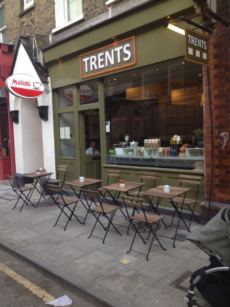
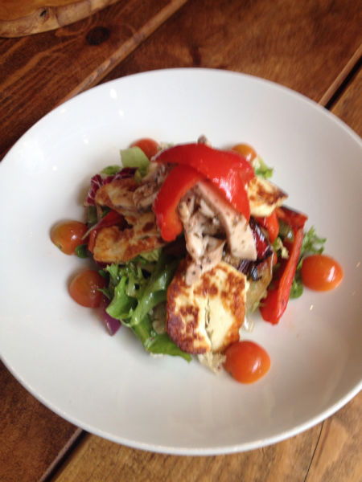
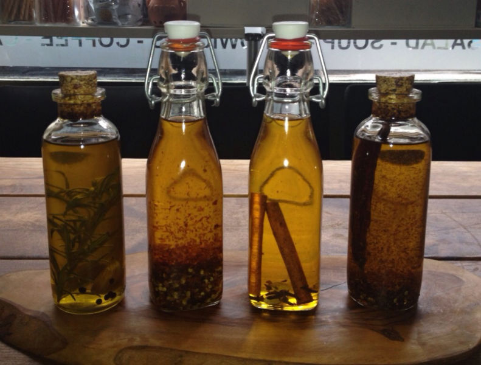
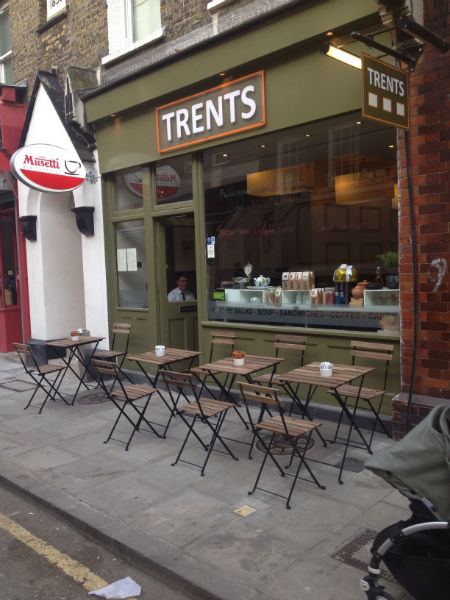
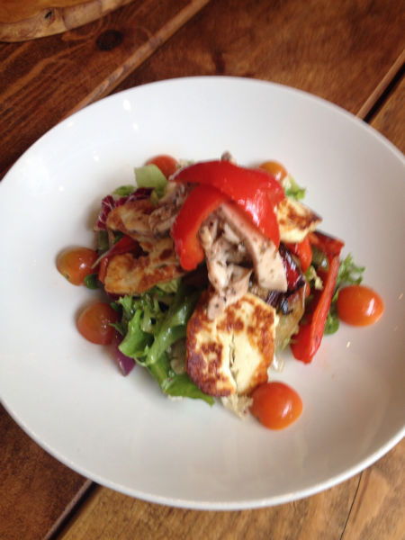
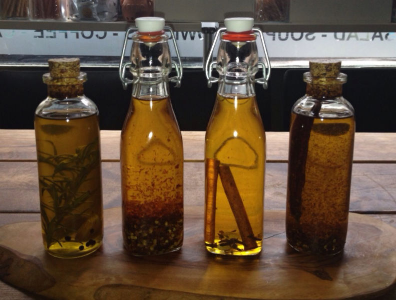
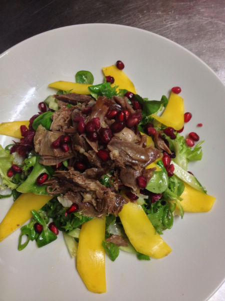
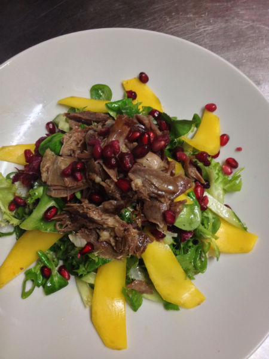

 



Trents - Leather Lane
We are a family run business established in Leather Lane Market since 2012. Our Musetti Coffee, Homemade Cakes and wide selection of delicious Breakfast, Healthy Salads, Wraps has earned us a well known reputation within the EC1 area. We are passionate about food and drink and offer a cosy friendly atmosphere where our customers come to enjoy our unique ambiance.
Cuisine: Contemporary Global
Dining Style: Casual Dining
Neighborhood: London - Clerkenwell
Accepts Walk-Ins: Yes
Accepts Bookings:Yes
Payment: All major Cards Accepted
Location: Only a short walk distance from Chancery Lane and Farringdon Underground Station.
Parking: No
Additional Details: Free WiFi, Meeting Room available
Address:
90 Leather Lane, London, EC1N 7TT
Opening Hours
Monday-Friday 8am-5pm
Saturday 8am-3pm